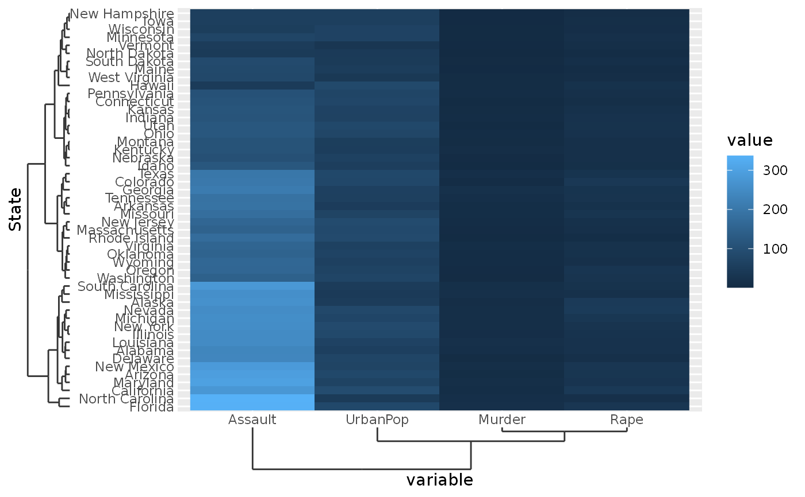

When discrete data has some inherent hierarchy to the relationship between discrete categories, you can display a dendrogram instead of a tick axis.
scale_x_dendrogram( ..., hclust = waiver(), expand = waiver(), guide = waiver(), position = "bottom" ) scale_y_dendrogram( ..., hclust = waiver(), expand = waiver(), guide = waiver(), position = "left" )
| ... | Arguments passed on to aestheticsThe names of the aesthetics that this scale works with. scale_nameThe name of the scale that should be used for error messages associated with this scale. paletteA palette function that when called with a single integer
argument (the number of levels in the scale) returns the values that
they should take (e.g., nameThe name of the scale. Used as the axis or legend title. If
labelsOne of:
limitsOne of:
na.translateUnlike continuous scales, discrete scales can easily show
missing values, and do so by default. If you want to remove missing values
from a discrete scale, specify na.valueIf dropShould unused factor levels be omitted from the scale?
The default, superThe super class to use for the constructed scale |
|---|---|
| hclust | An object of the type produced by the
|
| expand | For position scales, a vector of range expansion constants used to add some
padding around the data to ensure that they are placed some distance
away from the axes. Use the convenience function |
| guide | A function used to create a guide or its name. See
|
| position | For position scales, The position of the axis.
|
A ScaleDendrogram ggproto object.
The dendrogram type of scale does two things, first it reorders the
values along the relevant direction such that they follow the order
captured in the hclust argument. Secondly, it draws the dendrogram
at the axis. The dendrogram visuals inherit from the ticks theme elements,
so defining a linetype for the tick marks sets the linetype for the
dendrogram.
#>yclus <- hclust(dist(USArrests), "ave") xclus <- hclust(dist(t(USArrests)), "ave") df <- cbind(State = rownames(USArrests), USArrests) df <- reshape2::melt(df, id.vars = "State") # Supply the clustering to the scales ggplot(df, aes(variable, State, fill = value)) + geom_raster() + scale_y_dendrogram(hclust = yclus) + scale_x_dendrogram(hclust = xclus)